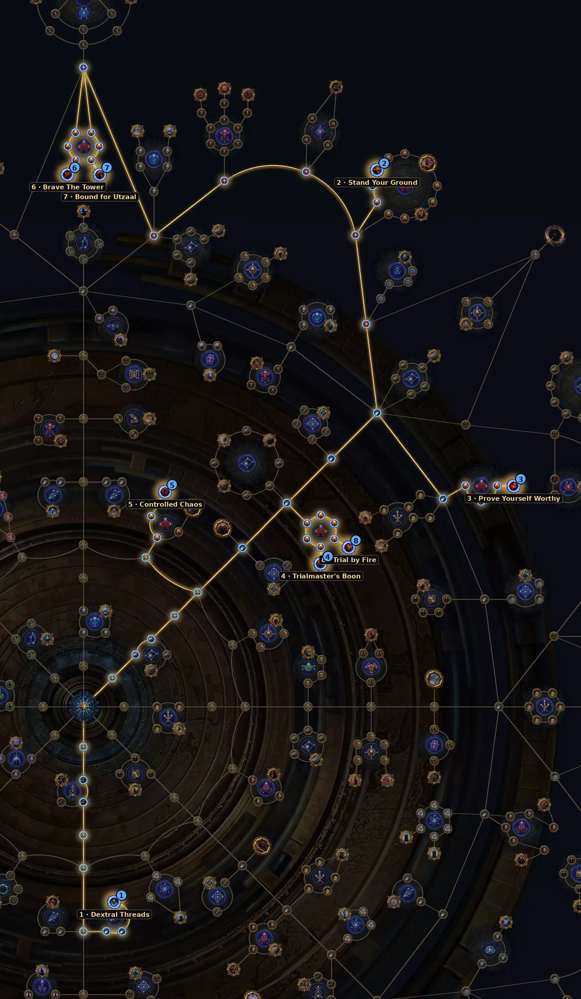

Rodadas de desafio com modificadores que acumulam. Na 3.30 as recompensas continuam melhorando depois da rodada 10, o que valoriza builds que aguentam muito.
| Item | Como usar |
|---|---|
| Threads | Ultimatum Threads; mais Threads trazem efeitos especiais. |
| Modificadores | Evite os que sua build não aguenta (ex.: menos recovery para builds de regeneração). |
| Pare na hora certa | Defina antes até que rodada vai; não arrisque o loot acumulado por ganância. |
Árvore oficial da 3.30 (a GGG publicou antes da liga). Caminho a partir do centro: 36 pontos para os essenciais e +16 para os extras. A árvore tem 150 pontos no total. Some com a base de sustento (36 pontos).
| Nó | O que faz |
|---|---|
| 1 Dextral Threads Essencial | Escolha a Thread da sua mecânica (Ritual, Ultimatum, Expedition ou Breach): +200% de chance de cair desse tipo. |
| 2 Stand Your Ground Essencial | Recompensas como se você fizesse 1 rodada a mais (o círculo encolhe 3% por rodada). |
| 3 Prove Yourself Worthy Essencial | Mods começam 1 tier acima e 25% de chance de duplicar a recompensa. |
| 4 Trialmaster's Boon Essencial | Escolha o tipo de recompensa: Currency, Uniques ou Divination Cards (+80%). Currency é a mais segura. |
| 5 Controlled Chaos Essencial | Escolha o objetivo das rodadas. "Só sobreviver" (30% mais curto) ou "matar ondas" (30% menos inimigos) são os mais rápidos. |
| 6 Brave The Tower Extra | Mais chance de boss na última rodada; o boss solta 10 catalisadores. |
| 7 Bound for Utzaal Extra | 25% de chance de catalisador virar Inscribed Ultimatum. |
| 8 Trial by Fire Extra | +10% de experiência e +4% de rarity por rodada. |
Abrir no site oficial (árvore do Atlas)
Nós de escolha (Thread, exército, líder etc.) aparecem marcados no link; escolha a opção indicada na tabela ao clicar neles.

Precisa de muita defesa e de recuperação estável: os modificadores acumulam.
Do site: Earthshatter Berserker, RF Chieftain, Storm Burst Hierophant.
Ainda não há vídeo de farm desta mecânica na 3.30.
Ver vídeos da 3.30 no YouTube
Busca pronta pela 3.30. A árvore do Atlas saiu antes da liga; os vídeos de farm da 3.30 começam a aparecer a partir do lançamento (13/11).